← 报告索引Parallel SD：5090 上的多方法扩展性与 GPU 成本
主矩阵当前成功 54/54 项；此页快照收录 54 项；状态 success。完整主矩阵已收齐。
本机 RTX 5090 · Qwen3-8B BF16 · TP1 · FA4 · SGLang offline Engine。四种 parallel draft 使用同一 target 和同一运行时 AR 基线。每个主矩阵 cell 为相同的 16 条真实输入、固定生成 128 tokens、独立进程、重复 3 次；每个任务/BS 组前后各跑一次 AR。
代码、环境与报告位于 ~/profile_spec，权重在外部 HF cache；decode CUDA Graph 和 overlap scheduler 开启，初始 cohort 的 prefill graph 关闭，prefix reuse 关闭。计时排除加载、编译、warmup 和 cache flush。固定输出忽略 EOS；本表不是自然停止条件下的应用吞吐或质量 leaderboard。
本轮已完成并核查 104 个无 profiler 的 benchmark cell、10 个 warmed trace、4 个数值诊断 cell 与 5 个 SPS 校准 cell，共 123 项。诊断、校准、profile 均不进入主吞吐排名。
主要观察
- GSM8K 的接受长度基本稳定，DFlash 请求平均周期却从 BS1 的 13.19 ms 增至 BS16 的 28.14 ms；AR 从 9.78 增至 11.18 ms。大 BS 的主要增长在 GPU 工作，不能仅凭 host NVTX 长度判断 CPU bubble。
- verify width 需要随 BS 改变：缩到 8 在小 BS 降低收益，却让 MT-Bench BS16 的 DFlash / Domino 从 0.84× / 0.94× 恢复到 1.15× / 1.33×。
- 动态预算不是自动加速：graph-aware DSpark 在 MT-Bench 减少约 34% graph 行数，但固定波次吞吐仍回退约 3.6%，需同时分析 acceptance 和尾部请求。
- Hybrid 不只增加 draft KV：Qwen3.5-4B 的中间 recurrent-state 缓冲在 BS1/4 额外占 1.50/3.75 GiB；所选 hidden taps 全来自 linear-attention block。
- 两个已知 BF16 分歧 prompt 开启 FP32 head 输出后都与 AR 一致；这是有限的数值诊断，不是全部输入的质量或逐 token 等价证明。
比较范围与 feature
checkpoint 训练和宽度不同，因此主表比较的是可部署组合。DFlash2 权重未改，层号转换有源码依据，已通过 native SGLang graph capture 和生成；尚未证明与原 Speculators 实现完全数值等价。Rust 扩展未构建。FA4 的 draft metadata glue graph 未开启，不能声称整个 SD 周期都在一张 graph 内。
完整逐 cell 数据、功能日志与质量限制 · DFlash2 转换记录 · checkpoint revision。
吞吐收益随 BS 和任务变化
gain = cell 吞吐中位数 / 匹配组前后 AR 吞吐中位数的中位数。τ = (实际输出 tokens − 每请求 prefill seed) / 请求 verify 次数之和，包含 bonus，受最后一轮截断影响。配置 BS 是最大活跃请求数，SD 的不同完成时间会产生 tail。
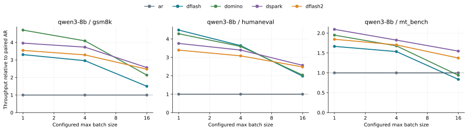
各任务的吞吐收益；未测点不插值填数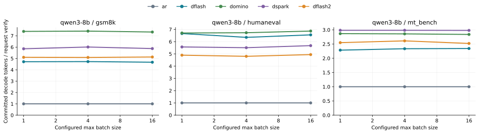
接受长度与收益分别观察，不能只用 τ 排名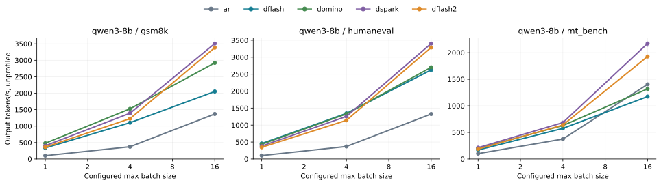
输出吞吐；短竖线为重复范围，不是置信区间GSM8K：dflash：gain 3.30× → 1.50×，τ 4.71 → 4.67；domino：gain 4.70× → 2.14×，τ 7.39 → 7.34；dspark：gain 3.96× → 2.56×，τ 5.86 → 5.87；dflash2：gain 3.55× → 2.47×，τ 5.11 → 5.13。接受长度变化较小，吞吐收益下降明显；这是每轮成本相对 AR 增长的线索，单靠吞吐仍不能区分 prefill、GPU 计算、带宽与控制开销。
总 SD 周期：请求计时给出的证据
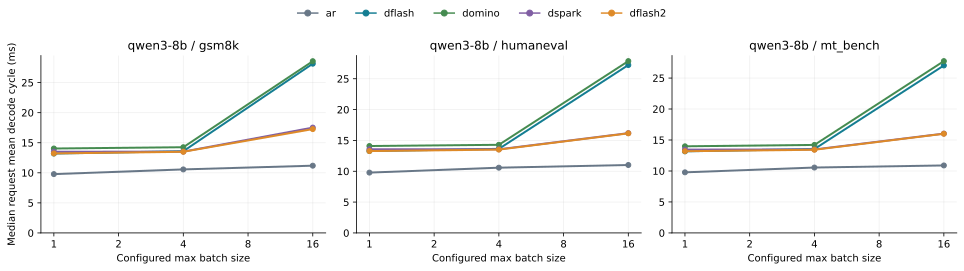
请求平均 decode 周期的中位数；覆盖 CPU、GPU 与反馈等待每个请求的平均周期 = (E2E−TTFT)/verify 次数；AR 分母为输出 tokens−1。时间定义来自 SGLang req_time_stats，与其返回的 decode_throughput 算式交叉检查。它排除了首 token 前的时间，但仍包含控制和等待；不是 GPU kernel 的独立时长。近似 gain≈τ×T_AR/T_SD，wall throughput 还受 prefill 与 tail 影响。逐请求计算明细。
显存：文件、逻辑 KV 与物理占用分开
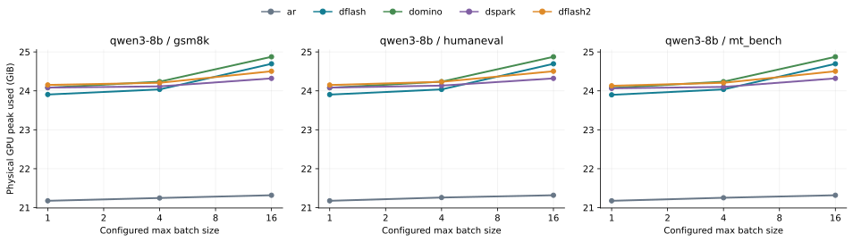
NVML 50 ms 采样的物理显存峰值，包含启动和运行；不是 torch allocatedtarget KV 每 token 144 KiB，32768-token pool 为 4.500 GiB；所有 draft 均为五层、每 token 20 KiB，pool 约 0.625 GiB。40 KiB/token 的原始 hidden taps 经投影并物化为 draft KV，不应再假定全历史永久保留原始 taps。DSpark 文件中 2.318 GiB 的 embedding/head 在当前 Qwen loader 被跳过，运行时挂接 target 模块，因此 4.416 GiB 文件不等于新增 4.416 GiB 显存。
这些是逻辑大小和 header 计数，不能把它们直接相加宣称解释了全部 NVML 峰值；CUDA context、graph、allocator 和 workspace 也占显存。显存核查来源。
Nsight：每轮成本来自哪里
代表 trace 当前成功汇总 10/10 项；采集状态 success。所有图只使用已成功结束的 profile cell。
DFlash BS1：每轮 GPU kernel work 13.03 ms，decode envelope 13.21 ms，host 控制 NVTX 1.17 ms。host 包含等待且与 GPU 重叠，不能整段再加到 GPU 时间上。GPU work 是 kernel 时长之和，envelope 是流水线区间；二者之差也不能直接归因于纯 CPU。
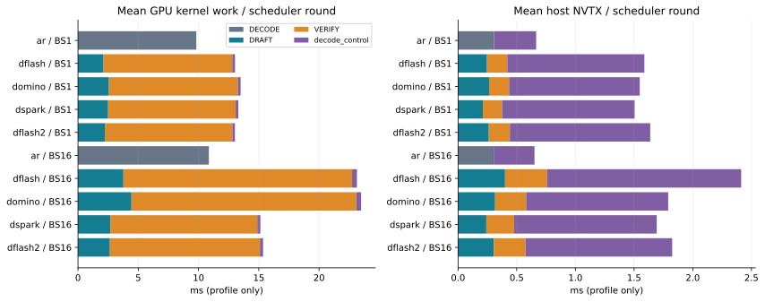
GPU kernel 工作与 host NVTX 时间分图，不能相加；control 不是 accept-only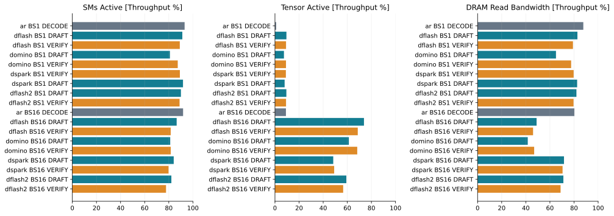
1 kHz 采样按 GPU 执行区间加权；存在边界混合，不是每 kernel counter限定观测 BS 的 forward 成本
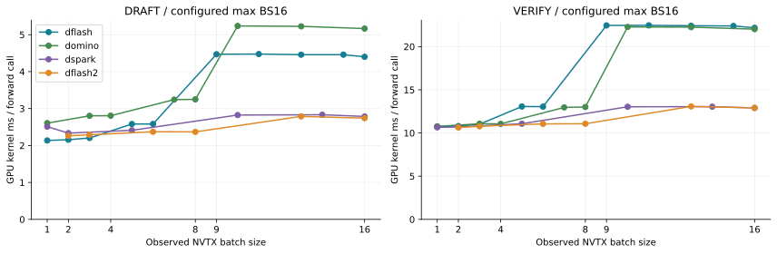
Tail 中的 forward GPU 成本呈 bucket 台阶，实际 BS 与 graph padded BS 分开capture buckets 为 [1,2,4,8,16]；pinned runner 将 raw BS 向上补到最近 bucket。DFlash 的 BS9/11/13/15 verify 因此仍接近 BS16 的成本，图中的台阶与源码规则相符。表中 padded 行是按配置和 NVTX BS 推算，不是直接读取 graph key；该比例不是硬件利用率，也不包含候选 token 被拒绝的浪费。增加 capture buckets、缩小间隔是后续可测的优化方向，此处没有宣称已测得收益。推算明细。
即使使用 offline Engine，batch 组织、请求完成后的 tail 和 overlap 调度也已经影响 SD 收益。线上 continuous batching 会进一步改变实际 BS 与补齐成本；本实验没有测在线请求到达流量和服务容量。
AR BS1：SM active 93.1%，Tensor active 1.0%，DRAM read 87.7%。高 SM active 与低 Tensor activity 同时出现；这些观测更符合带宽侧约束，不能把 SM active 当成计算峰值利用率。
AR BS16 decode 与 DFlash BS1、width16 verify 都约有 16 行 target query：Tensor active 分别 9.1% / 9.2%，DRAM read 80.3% / 79.1%。attention 的历史布局不同，但这组相近的资源特征支持按有效 query 行数分析；“decode / prefill”名称本身不足以判断瓶颈，短 verify 也可能偏带宽侧。
BS1 与 BS16 都使用相同 16 条 GSM8K 输入、cap64；与 cap128 的无 profile 吞吐表分开。CPU-dispatch envelope 按 prefill 边界切分，排除波次间的 API/prefill dispatch 间隔，但其起点可能仍在等待先前的 GPU prefill。GPU timeline 则从首个 decode GPU kernel 到最后一个 decode kernel，包含轮间空隙，排除首次 dispatch 前准备、首次 GPU 排队和最后的 host 返回。端到端周期另看请求计时。整体窗口中穿插的 prefill 数另列，不能把整体 wall/轮标成纯 decode 成本。
阶段 CSV · 按观测 BS 条件化的 forward 成本 · trace 清单和原始路径。固定 BS 的 GPU 成本优先看条件化表，避免 tail 混入。
本机代表性 trace 包：representative_traces.zip，13.4 MiB，含 7 个 nsys-rep 及归因 JSON。此链接指向服务器本地 ignored profiles/，GitHub 不托管该 ZIP；下载时使用清单中的服务器路径。
逐文件大小与 SHA256。
GPU busy fraction 只说明有没有 kernel 占据时间轴；SM active 只说明是否有活跃 warp；Tensor active 和 DRAM 带宽是不同资源的活动指标。高 SM active 不等于达到计算峰值。若 verify 的 GEMM 工作、Tensor activity 和轮延迟共同增长，而带宽不再接近峰值，才更支持向计算侧移动；当前资料不提供逐 kernel achieved FLOP/s，不能声称已严格证明 compute bound。
怎样用 roofline 理解收益下降
对一个 BF16 GEMM，令输入行数为 M、权重为 K×N。只计权重读取时，计算量约 2MKN FLOPs、权重流量约 2KN bytes，因此算术强度近似 M FLOP/byte。AR 的 M 通常随活跃 BS 增长；static verify 的 M 近似 BS×verify width。这个推导忽略 KV、激活、缓存重用与其他算子，属于解释方向的近似。
小 BS 下，SD 把多个候选 token 的 target 计算合并，能够分摊权重读取和 launch。BS 增大后，AR 本身也在更好地分摊权重读取；verify 则处理更多行，较早进入高计算量区域。所以即使 τ 不变，T_SD/T_AR 也可能增加，gain≈τ×T_AR/T_SD 随之下降。这不要求 draft 是唯一瓶颈，也不意味着 decode 永远 memory bound。
判断本机瓶颈时先看完整周期及分阶段 GPU 工作，再结合带宽、Tensor activity 和实际活跃 BS；最后才考虑单 kernel roofline。MoE 的实际权重流量还取决于专家路由，hybrid 还包含 recurrent-state verify/commit，这个 dense GEMM 近似不能直接给它们预测加速倍数。
同宽度、动态 verify 与 hybrid 消融
统一 verify width=8：success。
同一个 DFlash checkpoint，width16→8：GSM8K BS1 周期 13.19→13.09 ms，几乎不变，τ 却从 4.71 降到 4.02，收益下降；BS16 周期从 28.14 降到 16.82 ms，收益从 1.50× 升到 1.96×。最合适的宽度随 BS 改变，较高 acceptance 本身并不足以保证更快。
MT-Bench BS16，dflash：default width 的 0.84× → width8 的 1.15×。该结果用于检验主矩阵负收益是否能通过宽度调整改善，输出一致性见表中对应列。
MT-Bench BS16，domino：default width 的 0.94× → width8 的 1.33×。该结果用于检验主矩阵负收益是否能通过宽度调整改善，输出一致性见表中对应列。
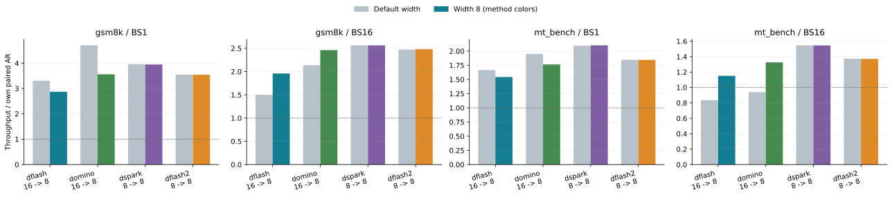
统一宽度与默认配置：各自前后 AR 归一化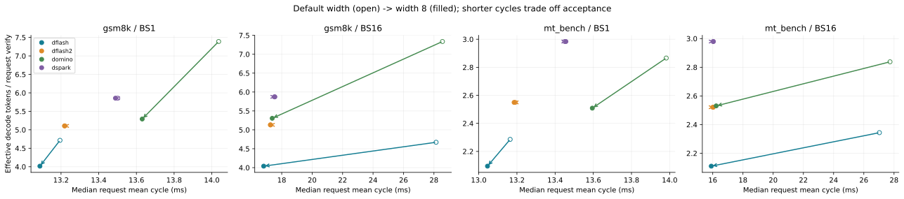
同 checkpoint 的周期成本与接受长度折中只收录前后 AR 均完成的组。DSpark/DFlash2 的 8→8 是重复对照。跨 campaign 输入、运行时和 8B worker 路径已核对；worker SHA 不同源于 hybrid 分支修正，归档源码去掉该未执行分支后 AST 一致。宽度改变仍可能带来 BF16 token 分歧，不能把它当作严格相同输出轨迹。CSV · 匹配与源码证据。
DSpark static / compact：原始 probe 表：success。
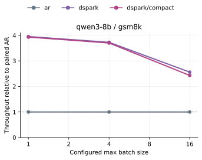
相同 checkpoint 与 SPS table 的 static/compact 对照这组 static/compact 都启用 core + CPU step interval 记录，以核对实际调度；没有启用 confidence tensor D2H 或 GPU event 计时。它与主矩阵独立，不能将观测开关的成本隐藏进算法收益。
调度记录包含 warmup 与测量阶段，仅用于核对预算与 graph 行数；吞吐仍来自排除 warmup 的请求计时。compact 的 num_verify_tokens 来自 layout.graph_num_tokens；static 的同名字段是 raw 行数，因此 static graph 行数按 capture bucket 推算。不把预算减少直接当成 GPU 计算减少。调度核查 · 逐轮记录。
DSpark static / compact：graph bucket 对齐表：success。
 相同 checkpoint 与 SPS table 的 static/compact 对照
相同 checkpoint 与 SPS table 的 static/compact 对照这组 static/compact 都启用 core + CPU step interval 记录，以核对实际调度；没有启用 confidence tensor D2H 或 GPU event 计时。它与主矩阵独立，不能将观测开关的成本隐藏进算法收益。
调度记录包含 warmup 与测量阶段，仅用于核对预算与 graph 行数；吞吐仍来自排除 warmup 的请求计时。compact 的 num_verify_tokens 来自 layout.graph_num_tokens；static 的同名字段是 raw 行数，因此 static graph 行数按 capture bucket 推算。不把预算减少直接当成 GPU 计算减少。调度核查 · 逐轮记录。
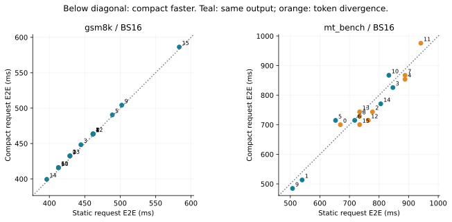
逐请求 E2E：虚线下方表示 compact 更快；同一批最后完成的请求决定 wall throughputMT-Bench 的 graph 行数减少约 34%，但最慢请求多跑了 verify 轮次，整批完成时间反而增加；TTFT 基本不变。请求平均周期、总 GPU 工作与固定 batch makespan 是不同指标。输出路径同时存在 BF16 分歧，因此不能把全部变化单独归因于预算策略。此结果不能直接预测在线 continuous batching 的容量收益。
Qwen3.5-4B hybrid：success。
hybrid 使用自己的 tokenizer、8 条输入、cap128、3 次重复；SM120 wrapper 不接受 FA4 target，因此 full/linear target 都为 triton，draft 为 FA4。它是独立 target/backend cohort，不能与 Qwen3-8B 直接合并绝对吞吐。
Hybrid 的额外显存不仅是 draft：Qwen3.5-4B 有 24 个 GDN 层，每请求完整 FP32 recurrent state 约 48 MiB。当前实现为 verify 的每个位置缓存中间 state；BS1 额外中间 SSM 为 1.50 GiB，BS4 为 3.75 GiB，已与分配日志核对。形状包含 pool padding slot，所以小 BS 的比例较大，不应把这个布局常数当作算法固有要求。
本次 ReplaySSM spec 关闭。上游有可选 ring/replay 路径跳过这块中间 SSM buffer，是值得独立验证的显存优化方向；这里没有其性能或质量数据。状态形状、分配日志与源码 SHA256。
同宽度实验只将训练宽度 16 的 DFlash/Domino 缩到 8，不把训练宽度 8 的模型盲目扩到 16。DSpark compact 必须读取本机测得 SPS table，校准使用 simulated accept=1，校准输出不进入吞吐或正确性表。主矩阵 static 结果不能称为完整动态 DSpark 收益。
成本模型要对应实际 graph，而非只对应请求预算
SpsCostTable 采用 floor lookup，graph runner 采用 ceil bucket。在本次 [8,16,32,64,128] 的 graph 网格下，直接使用 probe 坐标会低估 65–127 行预算的实际 graph 成本。对照表保留全部五个实测 SPS 值，只将 floor-lookup 区间起点改为 [1,9,17,33,65]；对 M=1..128 已逐项验证它等价于查找向上补齐 graph 的实测值。这些起点是查询区间边界，不是新的实测点。
两种表作为独立实验保留；一维模型仍把请求数与 verify 行数混在一起，不能视作完整二维成本模型。映射与源表 SHA256。
hybrid 的特征使用与 recurrent-state 提交是两件事：Qwen3.5-4B draft 的 taps [1,5,9,13,17,21,25,29] 全是 linear-attention block 输出；它们不是 GDN 内部 state。能捕获 hidden 不代表 verify/accept 的 state commit 已验证，需看对应实验的实际运行结果。
数值一致性和结论边界
当前主矩阵 AR 前后最大漂移 0.15%，cell 最大重复 CV 1.69%；累计 cached tokens 0，retractions 0。完整性是运行和算式核查，不是质量评估。
AR 与 SD、不同 BS 之间已有 BF16 token 分歧，配置内重复稳定也不能推出跨形状逐 token 一致。保留全部输出 IDs 和 first mismatch；没有把原因直接归结为舍入，也没有以理论拒绝采样精确性代替本机数值验证。FP32-head/logprob 诊断与 headline 吞吐分开。
两个已知分歧 prompt：默认 head 的 AR/SD 精确匹配 0/2，FP32 head 输出时为 2/2。BF16 首次分歧至少一侧存在 top-score tie；这指向 head 数值精度/实现路径的重要影响，不能据此证明全部分歧都只来自最终舍入，也不能推出全数据数值等价。
仅两个 GSM8K prompt 的诊断。只在首次分歧处比较 top-logprob，因为此时前缀仍一致；FP32 head 输出仍保留 BF16 backbone 和权重，不能证明整个模型数值等价。返回 logprob 会改变执行路径，其 BF16 输出与 headline 的比较也保留在 诊断 JSON 中，不使用诊断吞吐排名。
旧 JetSpec 原生图模式与 eager batch reference 是其他 engine/cohort；本次 SGLang 收益不能与其 baseline 混除。已发布的 JetSpec 可视化报告保留原始测量和 KV 预留布局限制。
由本轮证据得到的优化方向
复现材料
环境 lock · 协议 · 主矩阵 CSV · 逐 cell 证据 · AR/SD token 比较 · 跨 BS 比较 · 123 项 artifact 核查 · 当前 run 与保留的失败尝试。
原始 nsys-rep、SQLite 和权重不进入 Git。小型 manifest、CSV 和报告图进入仓库；原始 trace 路径见 profile 清单。